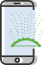
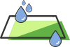

Integrações

Strider
- Monitoramento de irrigação.
Ativo

Strider
- Acompanhe a disponibilidade de água no solo para a cultura.
Strider
- Defina a melhor janela de plantio e colheita.
 G1 Globo
G1 Globo
- Notícias sobre clima, novidades e agronegócio.
Ativo
Smart Agro
- Monitoramento de colheita e plantio através de drones.